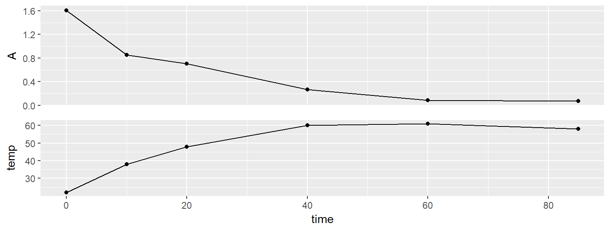
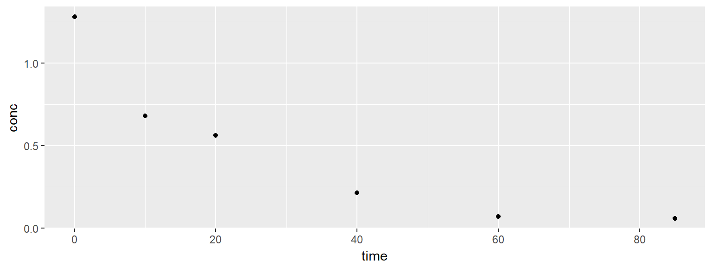

To demonstrate the full experiment of producing Gr-NH2, while monitoring the diazonium concentration, a small-scale experiment was conducted with the newly synthesised diazonium salt.
A 2 mM solution of 4-aminoethylbenzenediazonium was made by mixing 47 mg with 100 mL 0.1 M H2SO4. A 1 mM solution of 2-Naphtol was made by mixing 4.3 mg with 6 mL 10 % NaOH and 24 mL H2O. This makes it possible to make 4 mL samples for UV-Vis by mixing 3 mL of the 2-Naphtol and 1 mL diazonium-solution.
A 2x6 cm2 (0.7611 g) piece of graphite foil was used as the anode and a piece of stainless steel as the cathode. 10 V was applied between the electrodes for 85 min. Samples were extracted and temperature and current recorded at regular intervals.
The exfoliated graphene was then washed with copious amounts of water and acetonitrile to remove acid and residual diazonium-salt. In the end the pH of the washing water was approx. 6. The graphene was ultrasonicated in 100 mL DMF for 1 hour and left overnight.
library(tidyverse)
data171027 <- tribble(
~time, ~temp, ~cur, ~pot,
0, 22, 1.2, 10,
10, 38, 1.6, 10,
20, 48, 1.6, 10,
40, 60, 1.6, 10,
60, 61, 1.5, 10,
85, 58, 1.1, 10
)path <- "data/raw_data/uvvis/20171027_GrNH2_azodye/"
specs171027 <- tibble(file = list.files(path = path, pattern = "*.csv")) %>%
mutate(data = map(paste0(path,file), read_delim, delim = ";", skip = 1)) %>%
mutate(time = stringr::str_extract(file, pattern = "\\d{2}(?=min)") %>% as.numeric()) %>%
unnest()
eps499 = 5.022 # L/cm*mmol
data171027 <- data171027 %>%
left_join(specs171027) %>%
mutate(conc = A/eps499 * 4) # Multiplied by 4 to get the diazonium-concentration
g1 <- data171027 %>%
filter(nm == 499) %>%
ggplot(aes(time, A)) +
geom_point() +
geom_line() +
theme(axis.text.x = element_blank(), axis.title.x = element_blank(), axis.ticks.x = element_blank())
g2 <- data171027 %>%
ggplot(aes(time, temp)) +
geom_point() +
geom_line()
cowplot::plot_grid(g1, g2, ncol = 1, align = "v")
data171027 %>%
filter(nm == 499) %>%
ggplot(aes(time, conc)) +
geom_point()